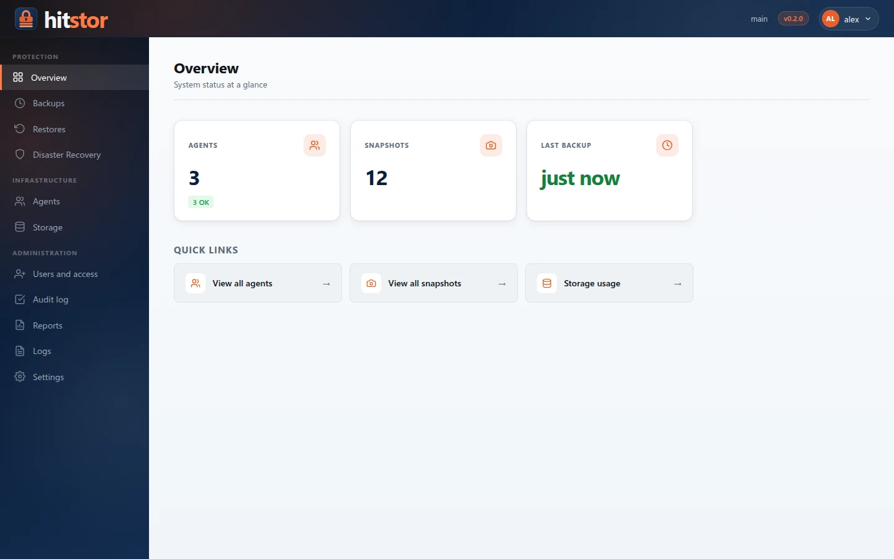
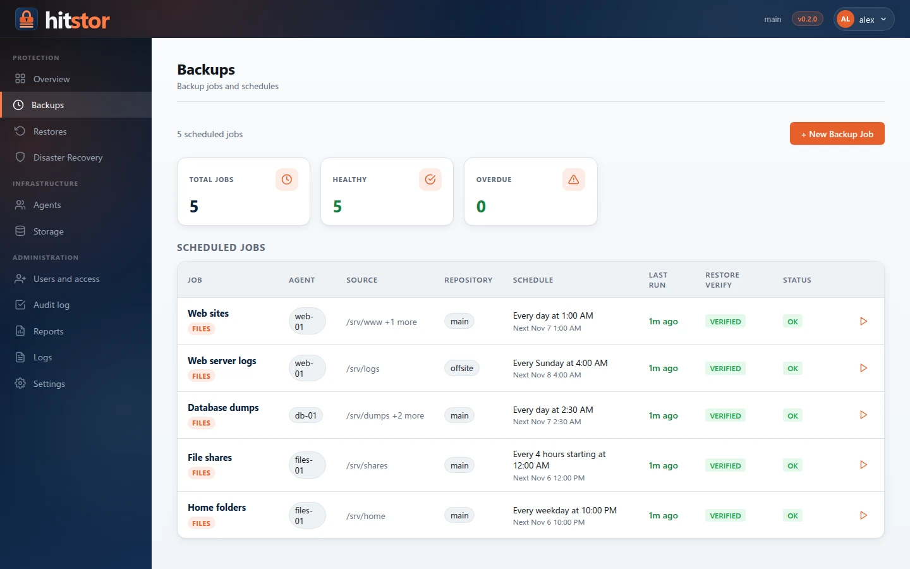
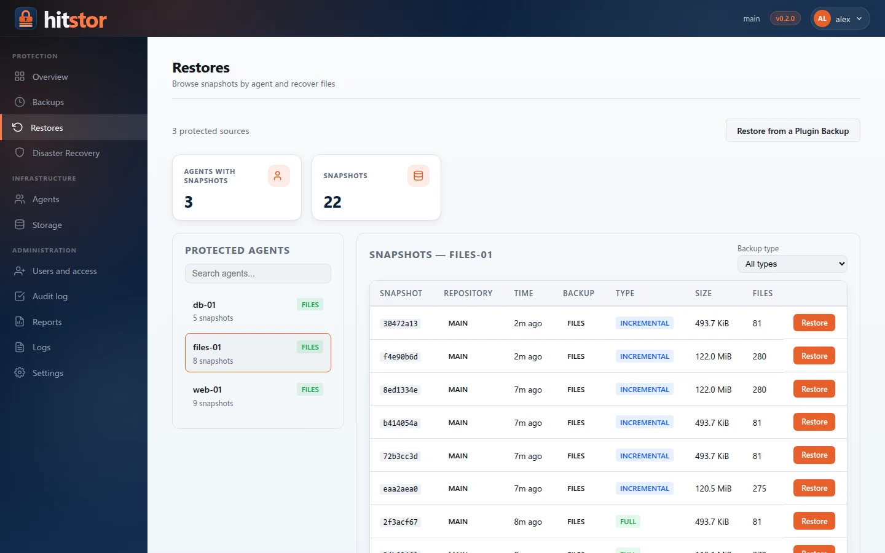
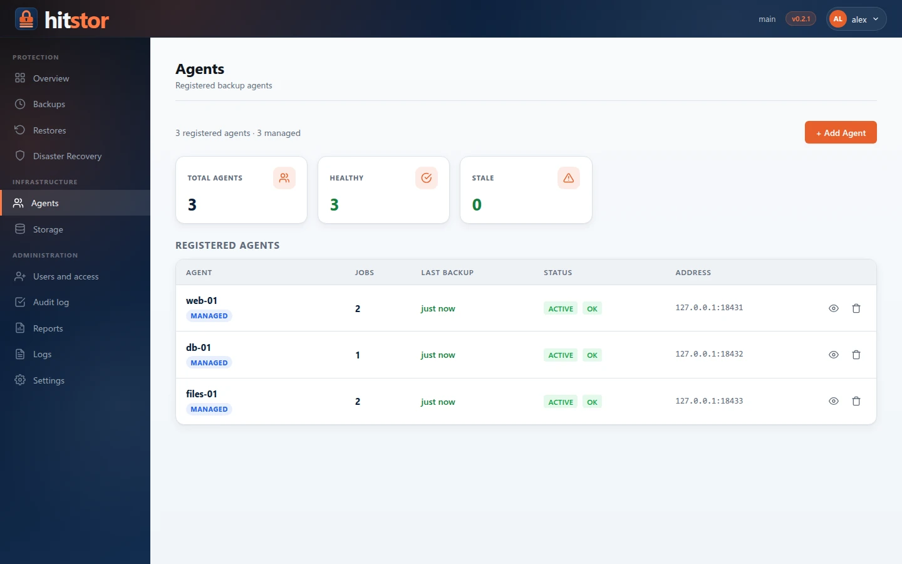
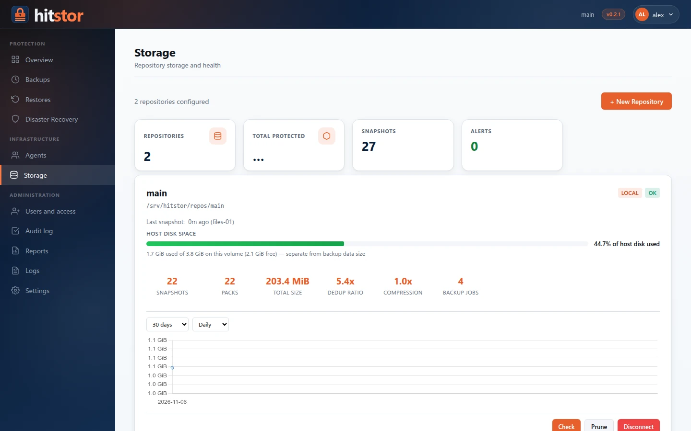

Web Dashboard¶
HitStor includes a built-in web dashboard for monitoring backup infrastructure, managing agents and backup jobs, restoring data, and configuring the server. The dashboard is served by the same hitstor serve process that handles gRPC connections.
Accessing the Dashboard¶
The dashboard is available at:
Replace SERVER_IP with the hostname or IP address of the HitStor server. The default dashboard port is 8421, configurable with --dashboard-port.
Once the server has a repository, the dashboard uses HTTPS with the same certificate as the gRPC port (see TLS Certificates); with the default self-signed certificate the browser shows a warning until you trust it. Plain-HTTP requests to the same port are redirected to HTTPS, so http://<server>:8421 also works. Before any repository exists, the server is in setup mode and serves the dashboard over plain HTTP.
Signing In¶
Everyone signs in with a personal account: user name, password and a code from an authenticator app. Roles decide which pages, agents and actions each person gets. See Users and Access.
On a new server, or after upgrading from a version with a single dashboard password, the dashboard first asks to create the administrator, confirming the shared dashboard password. That password comes from the serve_dashboard_password configuration key; if none is configured, hitstor serve generates one at startup, stores its hash in the config file and prints the plaintext once in the server log (look for no dashboard password configured). Once the first administrator exists, the shared password no longer signs in.
Session cookies are HttpOnly and SameSite=Lax, and changes are refused when the browser reports a request from another site.
Update Notifications¶
When update_check: true is set in the configuration (or Check for updates automatically is enabled under Settings → General), the server checks for new releases via the GitHub Releases API (or update_url) at startup and every 24 hours. Checks are off unless enabled. If a newer version is available, a notification banner appears at the top of every dashboard page:
HitStor v1.1.0 is available (current: v1.0.0). View release
The banner links to the release page on GitHub. You can also check manually from the CLI with hitstor version --check.
Layout¶
The dashboard uses a fixed header bar, a sidebar with icon navigation, and a main content area. The header shows the repository name, the version and, on the right, the user menu: My account, the language and Sign out.
The sidebar groups pages by what you do with them, and shows only what your role allows:
- Protection — Overview, Backups, Restores, Disaster Recovery
- Infrastructure — Agents, Storage
- Administration — Users and access, Audit log, Reports, Logs, Settings
Buttons for actions your role does not allow (for example removing an agent, or running a job on an agent you do not operate) are not shown.
Dashboard Pages¶
Overview¶

The main page displays a summary of the backup infrastructure:
- Number of agents and snapshots, backups running, last backup time, and storage usage
- Agent health breakdown (OK, stale, never backed up)
- Active Ransomware Sentinel alerts, with Resolve & Unsuspend
- Quick links to the Agents and Storage pages
Backups¶

Lists the backup jobs with their agent, last run, restore verification, and status. + New Backup Job opens a three-step wizard modeled on the backup jobs of enterprise backup tools:
- Selection. A tree shows every registered machine with its status and operating system. Expanding a machine lists its sources: the File system and each installed plugin (for example Microsoft SQL Server, then its instances and databases). Check what to back up; checking a container (a folder, an instance) backs up everything in it, including what is added later. A job backs up one source of one machine: once something is checked, the other sources lock until the selection is cleared. The side panel lists the selection and the source's options: exclude patterns and consistent snapshots for a file system, the plugin's options for a plugin.
- Target and schedule. The repository and when to run. A file system gets one schedule, nightly at 02:00 by default. A plugin source gets a backup plan with one schedule per backup kind: weekly fulls and daily differentials on, log backups every 15 minutes off (see Backup Jobs).
- Review. A summary of the job, with the schedule in words and its next run, and a suggested name.
A scheduled job shows Overdue when its latest backup is older than its schedule allows: the longest gap between two runs of its schedule plus half of it (for a weekly job, about 10½ days). Reports use the same rule.
Machines that are offline or suspended appear in the tree but cannot be expanded. On a job's page, Edit selection opens the same tree for that job's machine and source, with the current selection checked; the source options can change there too. Edit schedule (files) or Edit plan (plugins) changes when it runs. To back up another source, create another job.
Restores¶
Restores files from the snapshots of a protected agent, to the same or another agent, and restores plugin backups (for example a SQL Server database to a point in time) with Restore from a Plugin Backup. Active restores show their progress. See Restore.

Disaster Recovery¶
Guided full-system recovery of a protected agent onto a rebuilt host, and, under Bare metal, recovery media and single-use recovery tokens for Linux hosts. See Disaster Recovery and Bare-metal restore.
Agents¶
Lists all registered agents with their current status, type (managed or CLI), number of jobs, and last backup time. Click an agent name to view its detail page.

Adding an agent from the dashboard (administrators):
- Click + Add Agent, then use Network Scan to scan a local subnet, or Manual Entry to connect to an agent by IP address
- In Register Agent, enter the agent name and the token (
hitstor-agent show-idon the agent machine) - Click Register Agent
The server connects to the agent over AgentService (port 8422), verifies the token, and sends API key + server address. See Agent Management and Agent Discovery.
Agent Detail¶
Shows detailed information for a single agent:
- Status, type, address, last backup, number of jobs and healthy jobs
- Suspend Agent / Unsuspend Agent, + New Backup Job, Remove and Re-register, as your role allows
- Live Status (managed agents) — host name, OS, version and other information queried from the agent
- Plugins (managed agents) — installed workload plugins, installing a plugin package and configuring plugin credentials
- Backup Jobs — the agent's jobs with their schedule, repository, last run and status
What a job backs up (folders, databases) is chosen in the job's selection tree, not on the agent page.
Storage¶

The Storage page provides full repository management:
- Repository list — view all configured repositories (local and S3) with status badges, disk usage bars, snapshot counts, and pack/index statistics
- Create repository — initialize a new local or S3-compatible repository directly from the dashboard. Local repositories show available disk space and detect existing repos at the given path
- Connect existing repository — if a repository already exists at a path (for example, after reinstalling), the dashboard detects it and connects instead of reinitializing
- Disconnect repository — remove a repository from the configuration (does not delete data on disk)
- Integrity check — run
hitstor checkon a repository with real-time progress via Server-Sent Events. Results show pass/fail status and any errors found - Prune — free space by removing unreferenced data, with confirmation dialog and live progress. Shows packs deleted, bytes freed, and indexes rewritten
- Growth chart — visualize storage growth over time with configurable date range (30 days, 90 days, 6 months, 1 year, all) and granularity (daily, weekly)
- Snapshots — each repository's page lists its snapshots; a snapshot's page browses its contents and restores individual files or whole paths. See Restore. (
/snapshotsredirects here.)
Users and access, Audit log¶
Accounts, roles, sessions and the tamper-evident audit log (administrators). See Users and Access.
Reports¶
Scheduled PDF reports and on-demand downloads (administrators). See Reports.
Logs¶
Server and agent log entries, filterable and exportable. Retention of the in-memory log and the optional rotating log file is set under Settings → General.
Settings¶
Central hub for server configuration (administrators): general performance, TLS, network ports, Integrations (Gemini), notifications, email, and plugin packages. See Server Settings.
My account¶
Each user's profile, password, two-step verification, recovery codes, language, and open sessions. See Users and Access.
Schedule Management¶
Schedules belong to backup jobs, not to agents. Users with the backup operator role (or administrators) set them:
- In the New Backup Job wizard (step 2)
- On a job's page, with Edit schedule (filesystem jobs) or Edit plan (workload jobs)
Agents running in daemon mode (hitstor-agent daemon) poll the server for schedule updates and execute backups accordingly. See Scheduling.
JSON API¶
The dashboard exposes a JSON API for programmatic access. All endpoints return JSON responses. The table below lists the agent and storage endpoints; see the Dashboard HTTP API reference for jobs, restores, settings and the rest.
Endpoints¶
| Method | Path | Description |
|---|---|---|
GET |
/api/agents |
List all registered agents with status |
POST |
/api/agents |
Add a dashboard-managed agent (name, agent address, token) |
DELETE |
/api/agents/{name} |
Remove an agent (?keep_jobs=true keeps its jobs) |
POST |
/api/agents/{name}/suspend |
Suspend an agent |
POST |
/api/agents/{name}/unsuspend |
Resume a suspended agent |
POST |
/api/agents/{name}/schedule |
Legacy per-agent interval schedule (jobs carry their own schedules) |
POST |
/api/agents/{name}/repo |
Legacy per-agent target repository (jobs carry their own repository) |
POST |
/api/agents/{name}/browse |
Browse agent filesystem (managed agents) |
POST |
/api/agents/{name}/configure |
Configure agent backup paths (managed agents) |
GET |
/api/agents/{name}/info |
Query agent info (managed agents) |
GET |
/api/snapshots |
List all snapshots (supports ?agent=NAME filter) |
GET |
/api/stats |
Repository statistics (storage, deduplication, counts) |
GET |
/api/repos |
List all configured repositories |
POST |
/api/repos |
Create a new repository (local or S3) |
DELETE |
/api/repos/{name} |
Disconnect a repository |
POST |
/api/repos/test-s3 |
Test S3 endpoint connectivity |
POST |
/api/repos/detect |
Detect existing repository at a path |
GET |
/api/repos/{name}/growth |
Storage growth data for charting |
GET |
/api/repos/{name}/sessions |
Active backup sessions for a repository |
POST |
/api/repos/{name}/check |
Start integrity check (returns operation ID) |
POST |
/api/repos/{name}/prune |
Start prune operation (returns operation ID) |
GET |
/api/operations/{id}/events |
SSE stream for operation progress |
GET |
/api/disk-space |
Available disk space at a given path |
The API uses the same session as the browser, so a request needs the session cookie (hitstor_session) of a user who completed two-step verification, and it can do only what that user's role allows. Without a session the API answers 401. In the examples below, SESSION is that cookie's value, and -k accepts the default self-signed certificate.
Example: Add an Agent¶
curl -k -X POST https://localhost:8421/api/agents \
-b "hitstor_session=SESSION" \
-H 'Content-Type: application/json' \
-d '{"name":"web-01","agent_addr":"192.168.1.50:8422","token":"a3f8c1d9e4b7..."}'
Example: Browse Agent Filesystem¶
curl -k -X POST https://localhost:8421/api/agents/web-01/browse \
-b "hitstor_session=SESSION" \
-H 'Content-Type: application/json' \
-d '{"path":"/home"}'
Example: List Agents¶
Prometheus Metrics¶
The dashboard exposes a Prometheus-compatible metrics endpoint once the server has a repository:
This endpoint is unauthenticated (accessible without signing in) to allow Prometheus to scrape metrics without credential management. If this is a concern, restrict access at the network level.
See Monitoring for the full list of metrics and Prometheus configuration.
Next Steps¶
- Agent Management — register and manage agents
- Backup Jobs — filesystem and workload jobs, backup plans
- Monitoring — configure Prometheus scraping and alerting
- Scheduling — detailed scheduling configuration options
- Security — dashboard authentication and hardening